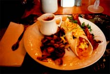
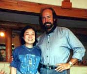
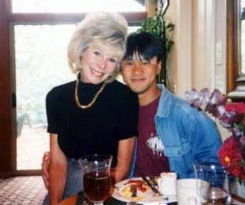
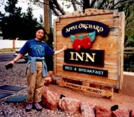

セドナ日記 〜 第５日目 98.5.8
B＆Bにお別れ＆鍵を返し忘れる
 最後の日だから、セドナでの朝食もこれが最後。そして、その朝は、珍しく、雨が降った。アリゾナの地に入って初めて雨を経験する。「雨もまた良し」、である。朝食はいつものテラスではなく、屋内のテーブルとなる。こちらも、ゆったりとしたスペースだ。最終日はメキシカンだった、ボリュームはいつものとおり大盛り状態。大盛りでも、やっぱり味は格別。とても幸せな朝食であった。
B＆Bの皆さんと記念写真など取りながら、この５日間、泊めてもらったことに感謝する。
 朝食のあと、さっと荷作りを済ます。お土産が多少増えたが、車だし、適当に詰めておしまいだ。まあ、もともと、荷物は少ないので、いつも簡単なのだけれど....。いよいよ、出発である。雨は止んだ。やっぱりあの雨は別れを惜しむ天使の涙だったのかもしれない。最後の挨拶をかわす。いろんな偶然が導いてくれた、素敵な宿と素敵な人達。なにも準備せずに来たけど、それがよかったのだ。偶然にまかせることの楽しさを充分経験できた。セドナは無計画に限る。また来ることを約束し、帰途についた。
 飛行機の時間を考えると、セドナを最終的に１２時ごろには離れなければならないが、最後に１つくらいの場所には立ちよれそうであった。帰り道の途中としては、ベルロックが一番いきやすい。迷わずベルロックに向かう。ベルロックの駐車場に着き、「さて登ろうか」と思ったのだが、とんでもないものをポケットから発見した。なんとB＆Bの部屋の鍵を返し忘れていた。この４日間、出歩くときはいつもこの鍵を持っていた。普段B＆Bの玄関は鍵がかかっているのだ。宿泊客は、チェックインのときに渡された鍵で入ることができる仕組だ。
そんな、鍵を見つけてしまった僕らは、ベルロックを諦め、B＆Bに戻る。B＆Bにもどって、お土産にと思っていた、日本から持ってきた緑茶があることを思い出した。「きっとこの緑茶をプレゼントするために戻ったのだな....」と、思い、ポーラに鍵を返し、緑茶をプレゼントした。
再び、お別れの挨拶。また来ることができるだろうという確信はますます強まった。